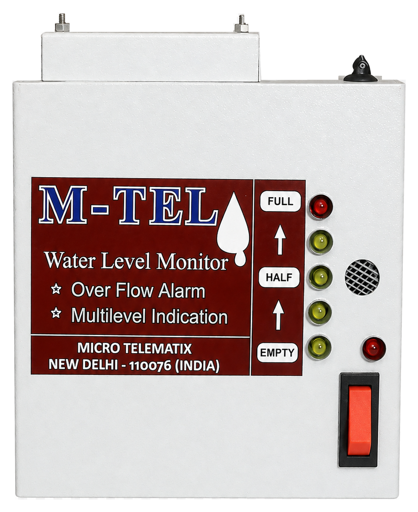
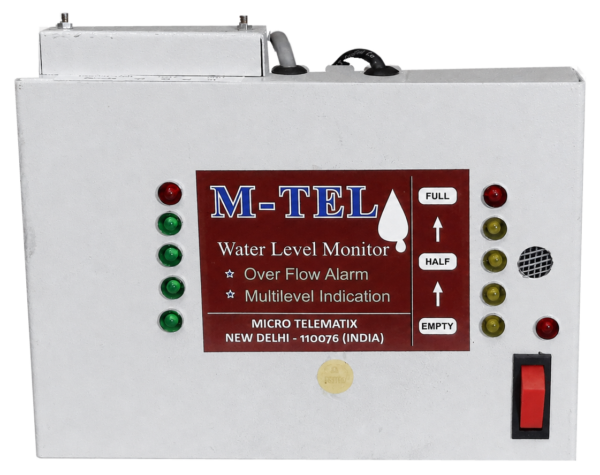
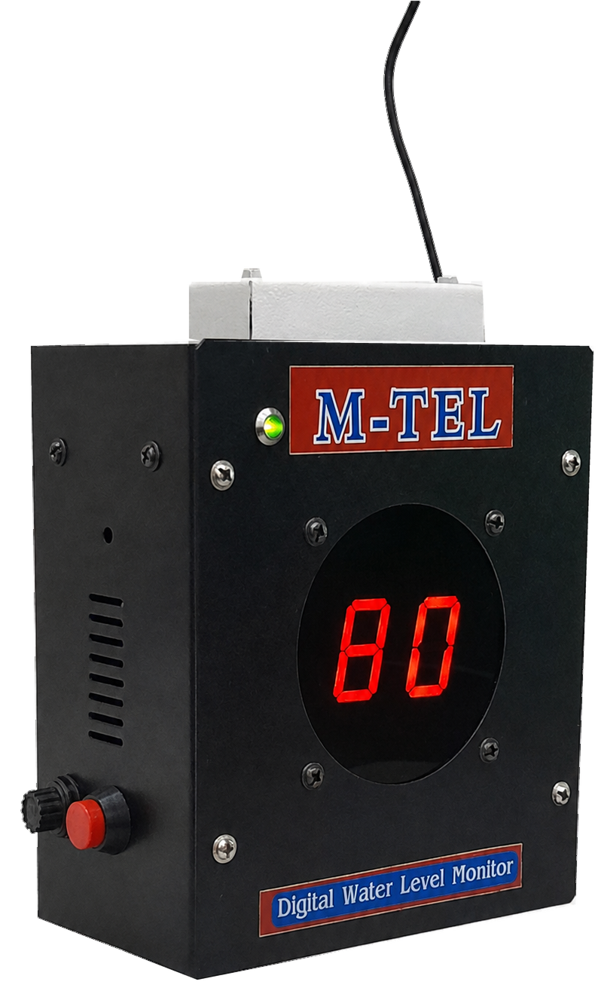
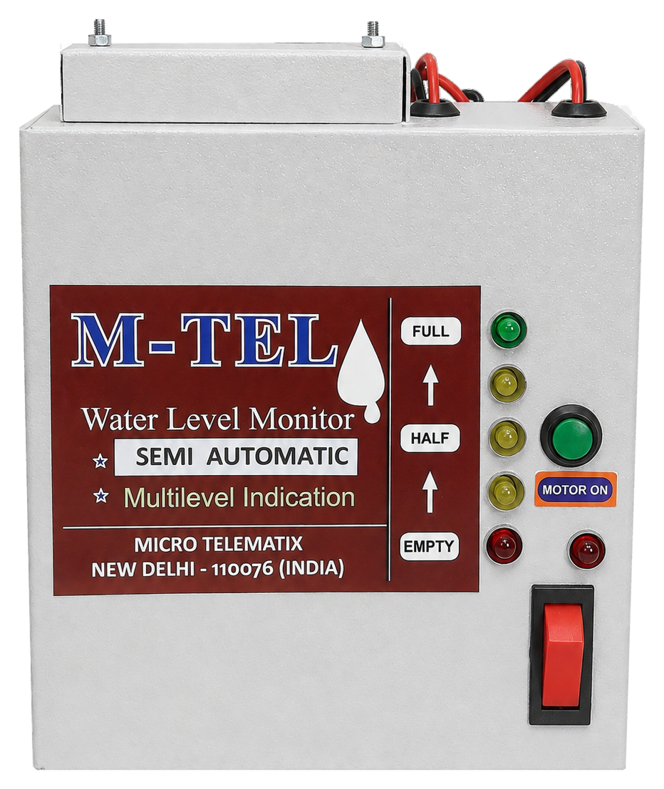
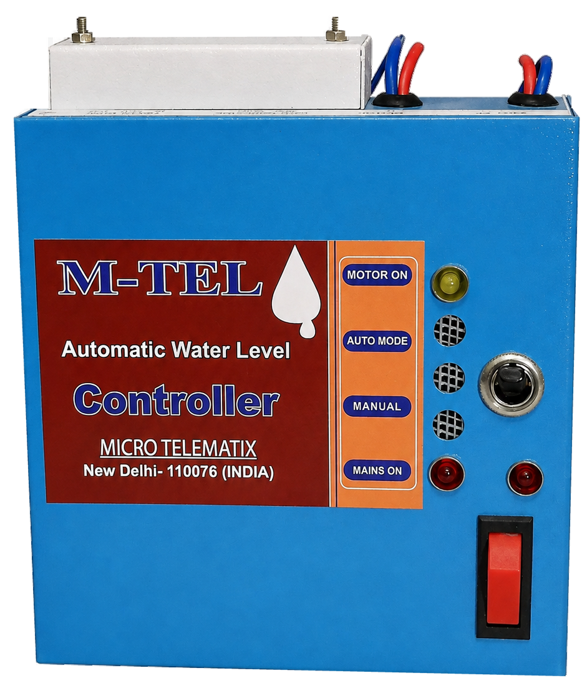
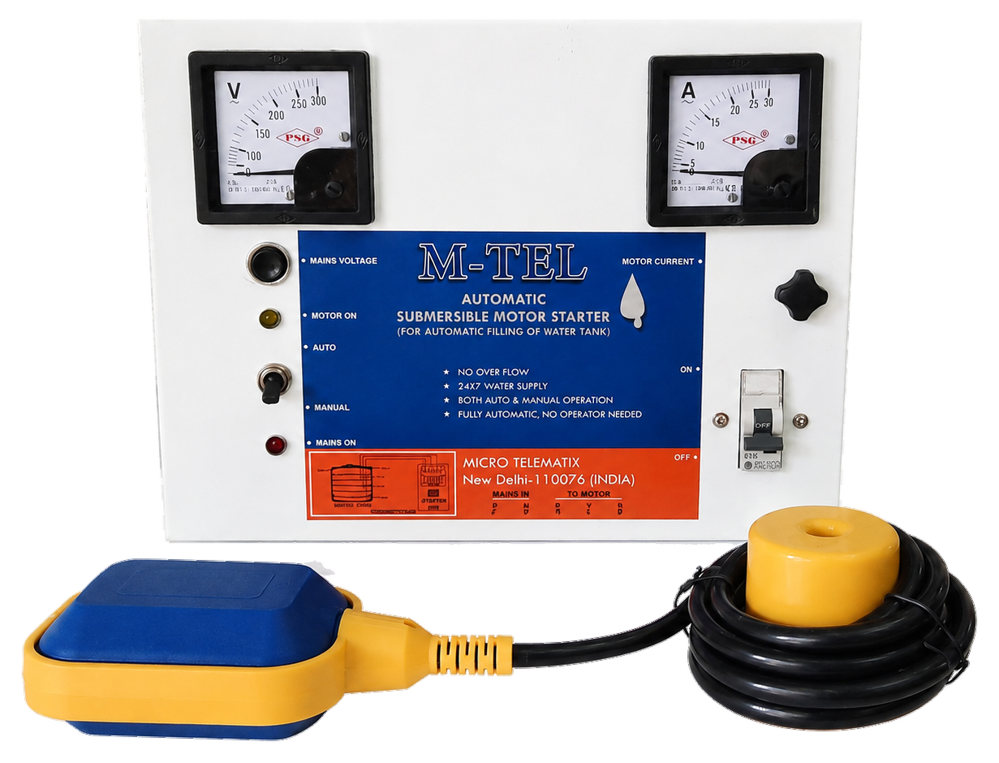

Water Solutions
Water Management
Smart solutions with every drop
Our advanced water level monitoring and control systems help you save water, prevent overflow, and automate with confidence.
Water Management Solutions

Single Tank Water Level Indicator with Alarm
Monitor an overhead or destination tank with clear five-level LED indication and an audible pre-overflow alarm.
- 5-level LED indication: Empty · 1/4 · Half · 3/4 · Full
- Audible alarm before overflow
- Easy installation
- Saves water and electricity
- 1 year warranty

Double Tank Water Level Indicator with Alarm
Monitor supply and destination tanks together, with an audible alarm before the destination tank overflows.
- 5-level LED indication: Empty · 1/4 · Half · 3/4 · Full
- Audible alarm before destination-tank overflow
- Red warning indicator before overflow
- Elegant rust-proof powder-coated enclosure
- Saves water and electricity
- 1 year warranty

Digital Water Level Indicator with Alarm
View tank water levels on a clear digital display, with an audible alarm at 99% before overflow.
- Digital water level indication (Empty · 20% · 40% · 60% · 80% · 99% · Full)
- Audible alarm at 99% before overflow
- Prevents property damage due to overflow
- Saves water and electricity
- 1 year warranty

Semi-Automatic Water Level Controller
Manual ON · Automatic OFFThe user manually starts the pump and the controller automatically switches it off when the tank becomes full.
Features
Benefits

Fully Automatic Water Level Controller
Automatic ON · Automatic OFFThe controller starts the pump when the water reaches a preset low level and stops it automatically when the tank becomes full.
Features
Benefits

Fully Automatic Submersible Borewell Motor Control Panel
Automatic ON · Automatic OFFAdvanced electronic automatic starter panel for submersible borewell pumps.
Features
Benefits
Let us help you find the right solution